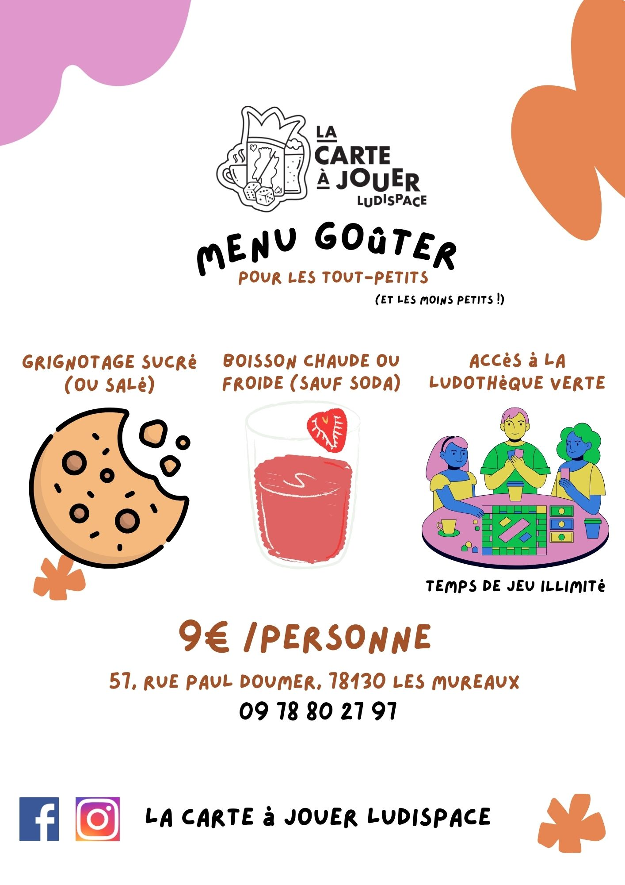
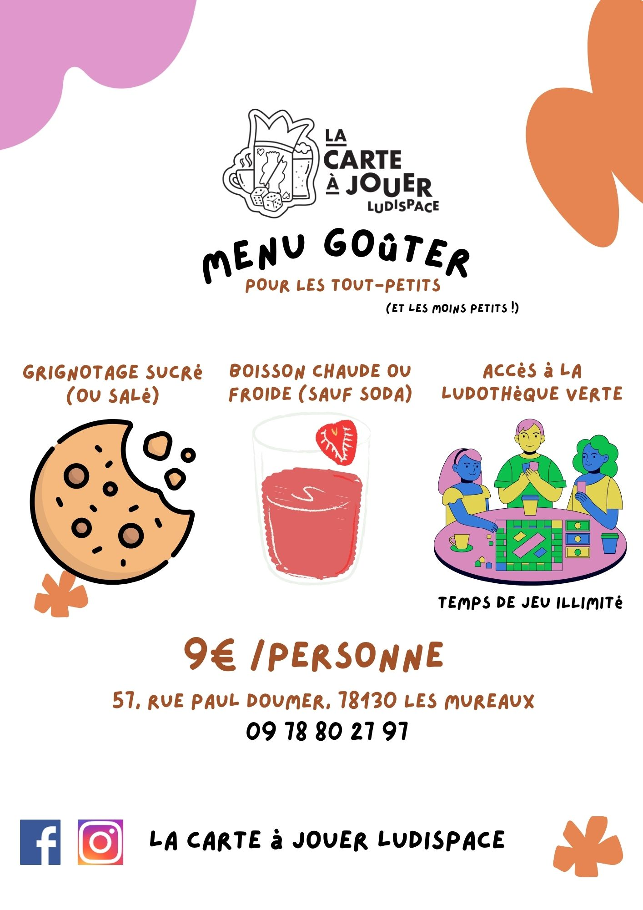
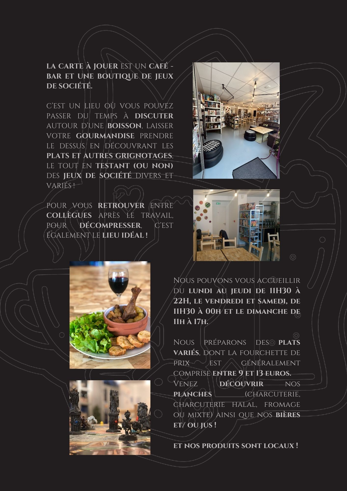
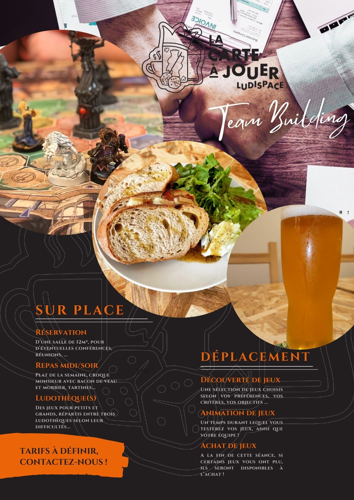
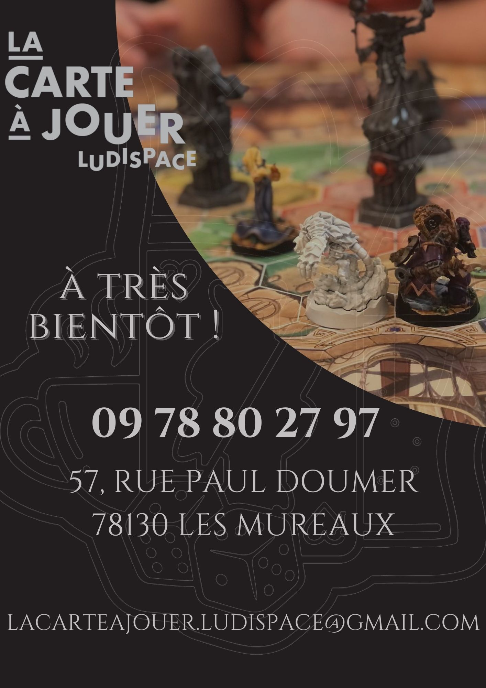
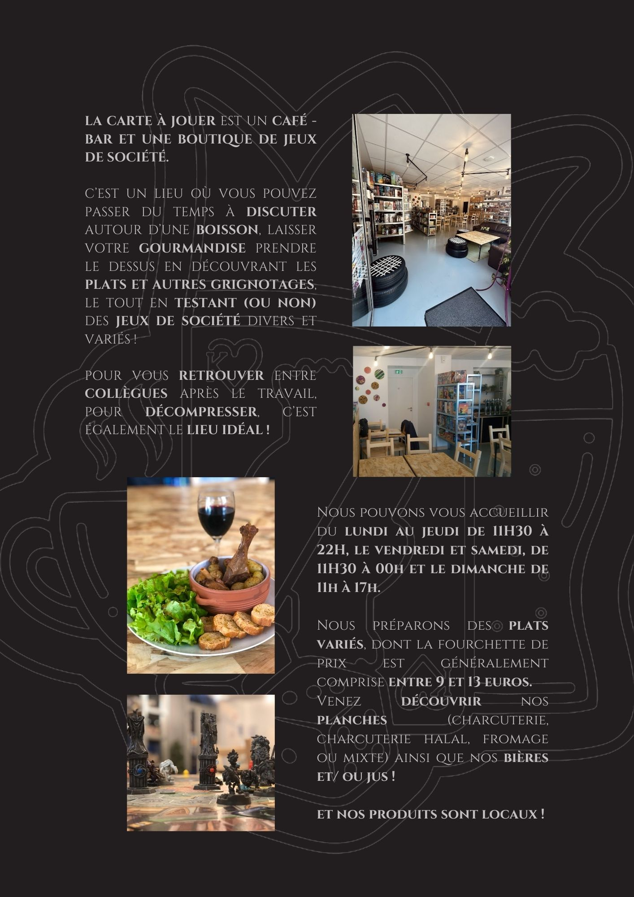
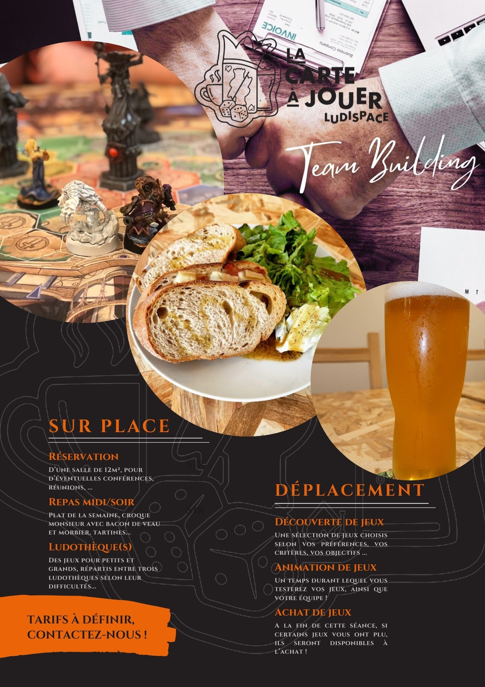
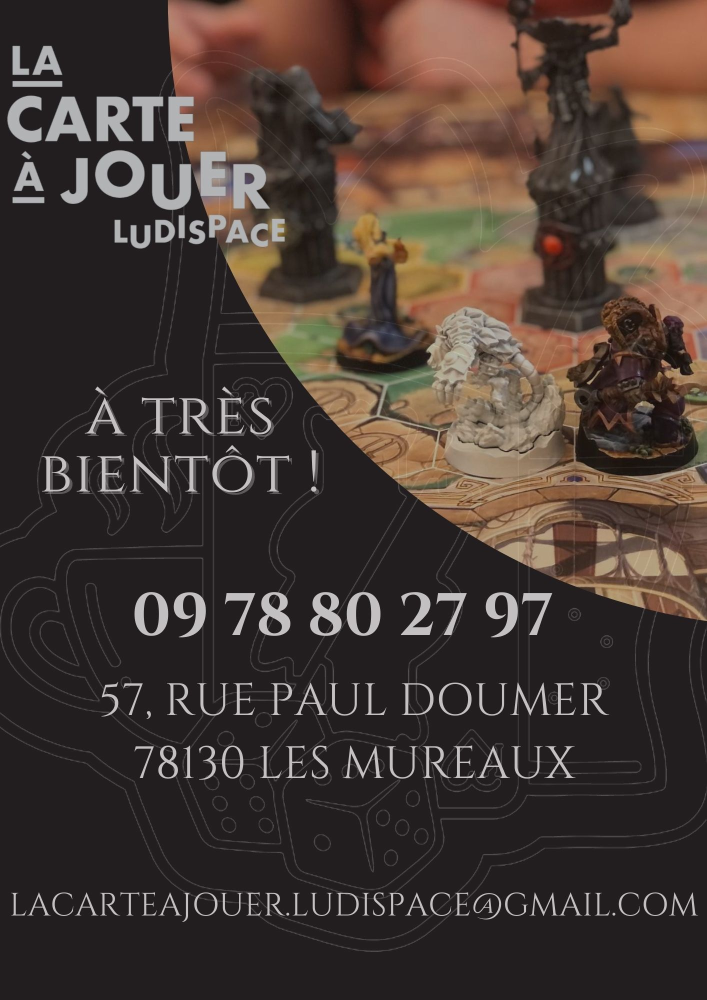

Quelques unes de mes oeuvres...
Designs
Ces designs ont étés crées durant mon temps libre. Ce sont des flyers, des affiches et des documents destinés à attirer une clientèle professionnelle pour réaliser des team-building dans un lieu qui n'existe malheureusement plus...
La majorité des photos que l'on peut voir ont étés prises sur place, j'aime l'idée de montrer réellement les choses et de les valoriser.


 

 





Ces documents-ci servent actuellement à accompagner des assistants d'éducation dans leur travail, afin de simplifier la communication dans l'équipe.
Pour les différents designs de ces pages, je me suis inspirée des quatre saisons.
.jpg)
.jpg)
.jpg)
.jpg)
Mes travaux poussés sur GitHub : Ici !
Cela vous permettra de visualiser mes travaux actuels et ma façon de travailler, aussi bien en front-end, qu'en back-end.
Et enfin... ce site !
Il est normalement pensé pour tous les écrans, afin que la navigation se fasse naturellement.
C'est un projet personnel, que je mettrais à jour au fur et à mesure de mon apprentissage, et qui me servira, entre autres, pour ma veille technologique.